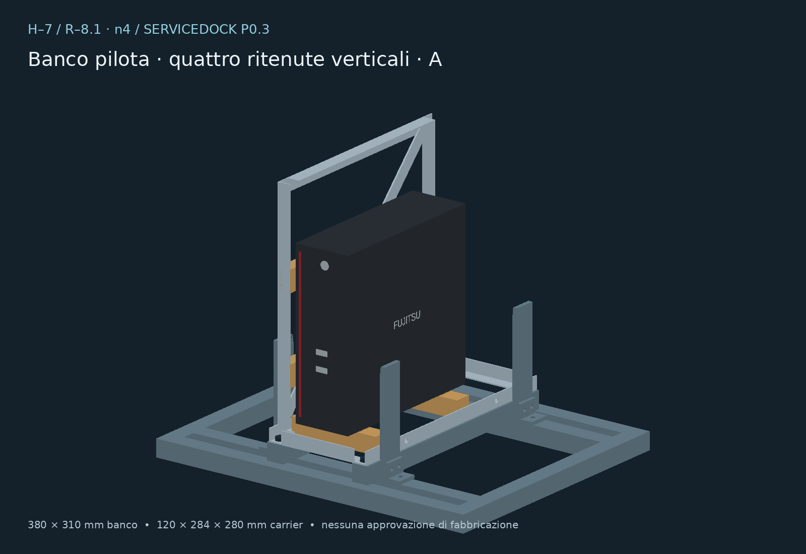
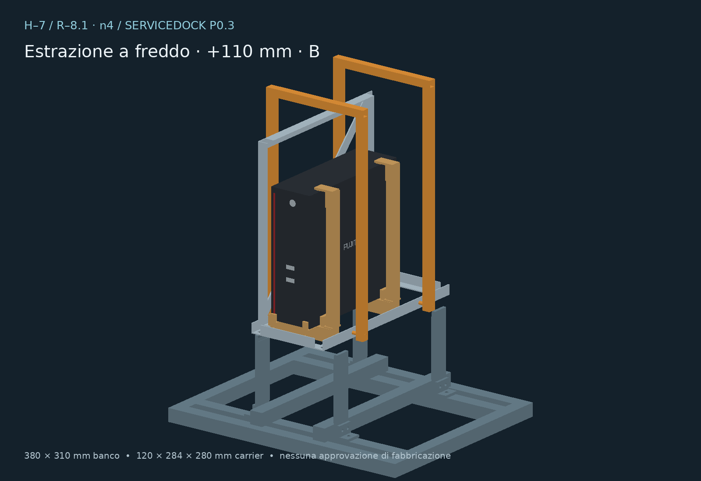

01 · Bloccato
Quattro viti accessibili dall'alto, su due appoggi longitudinali. Nessun ingombro aggiunto alle guide durante l'esercizio.
Variante A: cover VESA OEM da rilevare.
Modulo pioniere n4 · ritenuta positiva, estrazione verticale e banco di prova indipendente.

Quattro viti accessibili dall'alto, su due appoggi longitudinali. Nessun ingombro aggiunto alle guide durante l'esercizio.
Variante A: cover VESA OEM da rilevare.

Due portali simmetrici removibili, quattro punti di presa; guide superate di 10 mm. Solo a freddo e dopo approvazione dell'attrezzatura.
Variante B: ritenute indipendenti dalla cover OEM.
Schema nominale, non disegno di fabbricazione. La riserva mano/attrezzo è un ingombro di studio; misurare lo spazio reale.
Proiezione prudenziale dell'intero inviluppo durante l'estrazione. Imposta misure reali, non il valore dichiarato nominale.
Non è un'autorizzazione al sollevamento: non considera deformazioni, giunti, non parallelismo, presa, cavi o ostacoli reali.
Dossier P0.3 · CAD parametrico · Distinta incrementale
20 controlli nominali · 6 sweep carrier · 6 controlli portali · sweep portali
33 intersezioni vuote nelle verifiche geometriche eseguite, non una validazione dei giunti o della termica. I due portali e le quattro guide sono ancora allo stadio di ipotesi costruttiva.